Heterra
Advanced spatial analysis. One lightweight GIS app.
前沿空间分析方法,一款轻量级 GIS 软件
Heterra is free, lightweight software for exploring spatial heterogeneity, uncovering patterns, building predictions, and evaluating models—with interactive maps, charts, and guided tutorials for every method.
Heterra 是一款免费、轻量的空间分析软件,用于探索空间异质性、发现空间模式、构建预测模型并评估模型表现。每种方法均配有交互式地图、统计图和引导式教程,并可导出适用于学术论文与研究报告的高质量图件。
Mac (Apple silicon, macOS 13 or later) · Windows 10 or 11 (64-bit)
Mac(Apple 芯片,macOS 13 或更高)· Windows 10 或 11(64 位)


For Mac and Windows
支持 Mac 和 Windows
Open shapefiles, GeoTIFF, GeoPackage, GeoJSON, CSV and File Geodatabase. Style and explore layers, then run a method in the same window, with no R or Python to install.
可打开 Shapefile、GeoTIFF、GeoPackage、GeoJSON、CSV 和 File Geodatabase。在同一个窗口里设置符号、查看图层、运行方法,不用安装 R 或 Python。
Results checked against R
结果与 R 核对
Each method is tested against its R reference implementation. Every tutorial compares its results with the reference on your own computer.
每个方法都与其 R 参考实现对照测试。教程会在你自己的电脑上把结果与参考结果比较。
Figures ready for papers
可直接用于论文的图
Export charts and page layouts as vector PDF and SVG, or as PNG at print resolution, with colours from RColorBrewer. Keep the data behind each chart as CSV.
统计图和版面可导出为矢量 PDF、SVG,或印刷分辨率的 PNG,颜色来自 RColorBrewer。每张图背后的数据也可以导出为 CSV。
The whole result in one figure一张图看完整个结果
When a run ends, its main chart opens. In OPGD, the feature figure brings together the Q curves, optimal breaks, factor detector, risk means, risk map and risk, interaction and ecological detectors, ready to export as PDF, SVG or PNG at 300 dpi.
运行结束后,主要的统计图随即打开。OPGD 的代表性图把 Q 曲线、最优断点、因子探测、风险均值、风险地图以及风险、交互和生态探测放在同一张图里,可导出为 PDF、SVG 或 300 dpi 的 PNG。

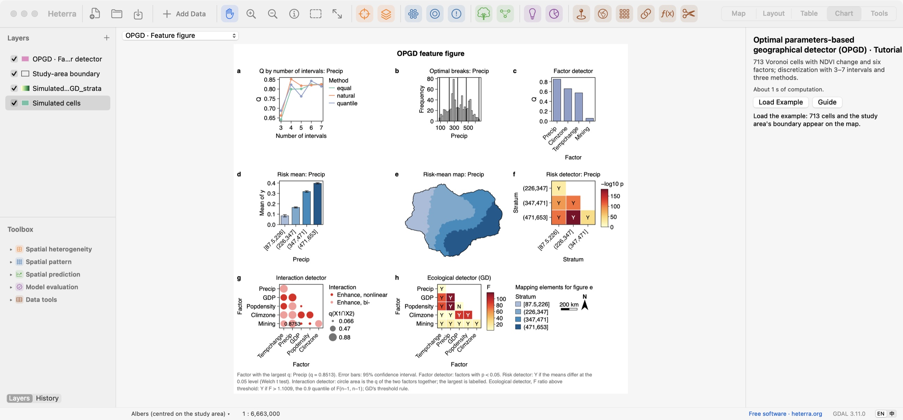

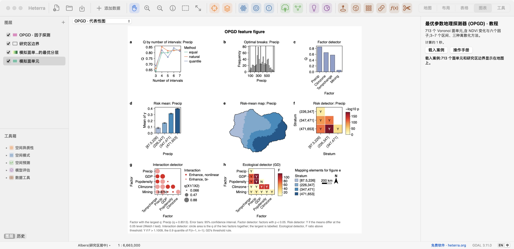
Set up in steps, run where it counts
分步设置,需要时才运行
Each tool walks through its settings one step at a time. Run appears only at the steps that compute something.
每个工具按步骤设置,只有需要计算的步骤才有运行按钮。
A tutorial in every tool
每个工具都有教程
Load an example, follow the steps and read the results, with a guide in eight languages.
载入案例,跟着步骤操作并解读结果,手册有八种语言。
Charts linked to the map
统计图与地图联动
Where a chart lists a layer's categories, click one to select its features on the map.
统计图列出图层的类别时,点击一个类别就能在地图上选中对应要素。
Results from every method每个方法的结果
Each screenshot is the result page after running that method's tutorial. Click to enlarge. Several tutorials use simulated data, so the numbers illustrate the tool and do not describe a real study.
每张截图都是运行该方法教程后的结果页面,点击可放大。部分教程使用模拟数据,图中的数字只用于演示软件,不代表真实研究结果。
Spatial heterogeneity空间异质性
OPGD The optimal discretisation with the factor, risk, interaction and ecological detectors, in one figure.最优离散化,以及因子、风险、交互和生态探测结果,都在一张图中。

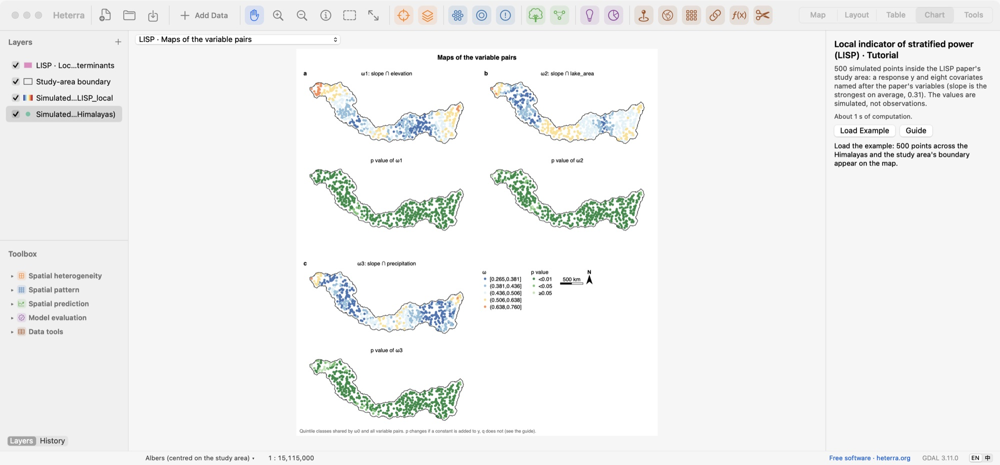

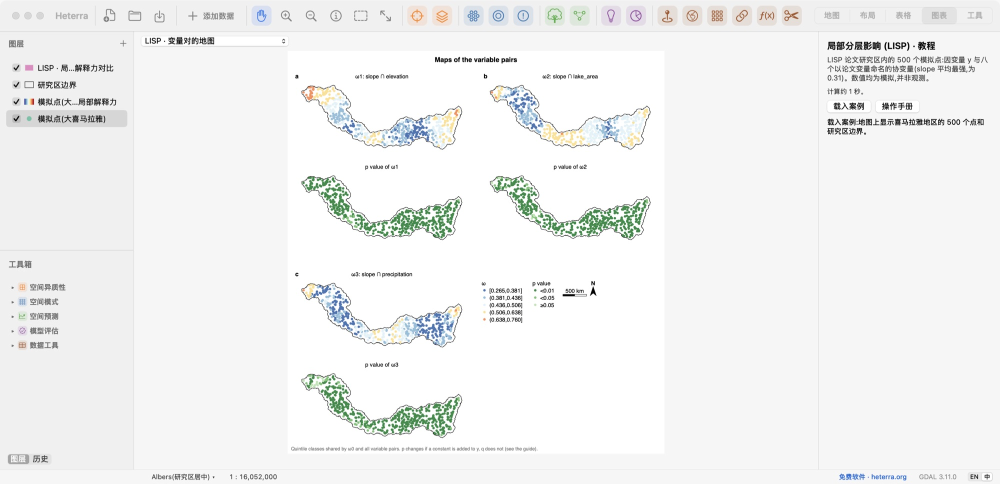
Spatial heterogeneity空间异质性
LISP Local power of variable pairs and its significance, at every location.每个位置上变量对的局部影响及其显著性。

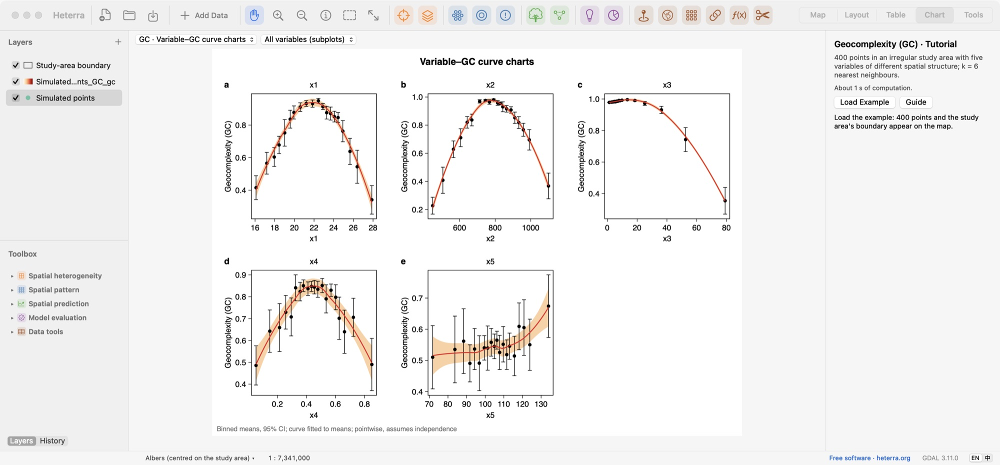

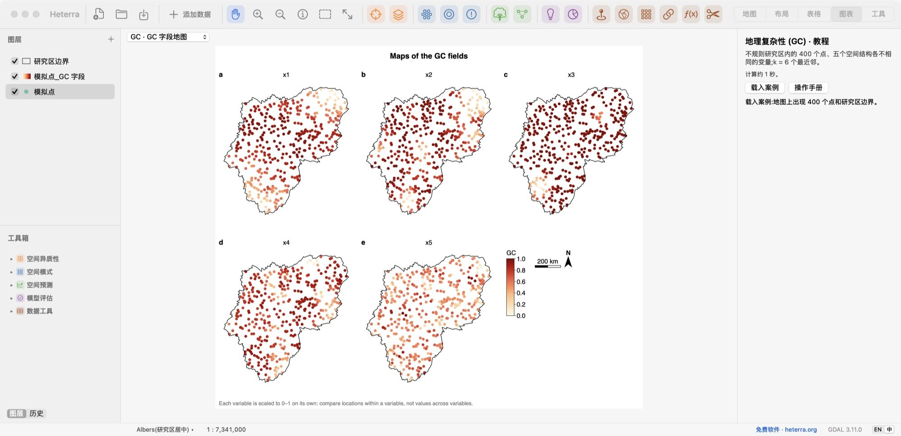
Spatial pattern空间模式
GC Geocomplexity against the value of each variable, with confidence intervals.每个变量的值与地理复杂性的关系曲线,含置信区间。

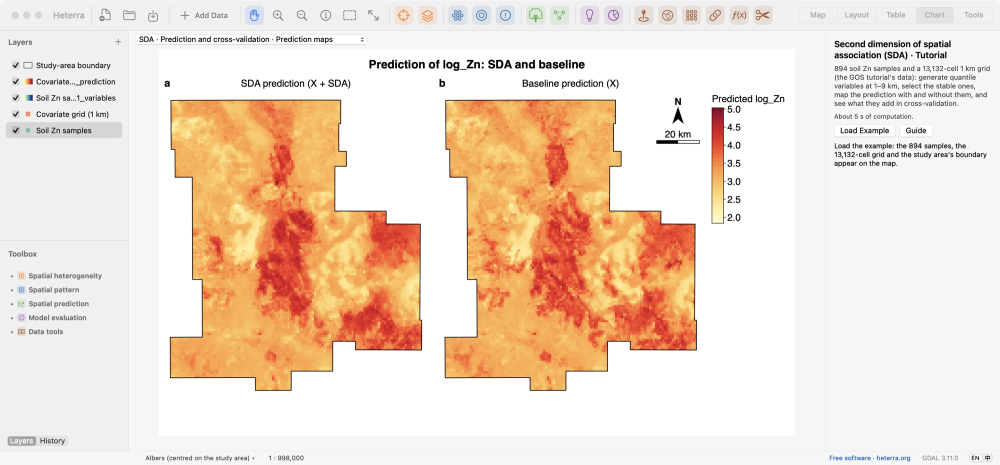

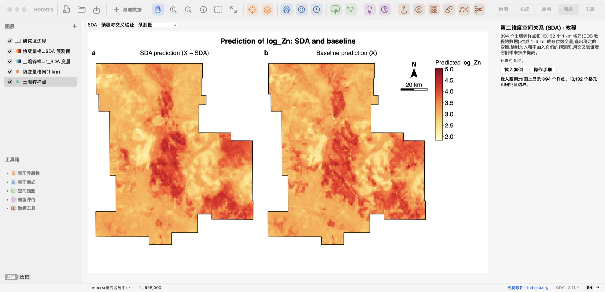
Spatial pattern空间模式
SDA Prediction maps with and without the SDA variables.使用与不使用 SDA 变量的预测图。

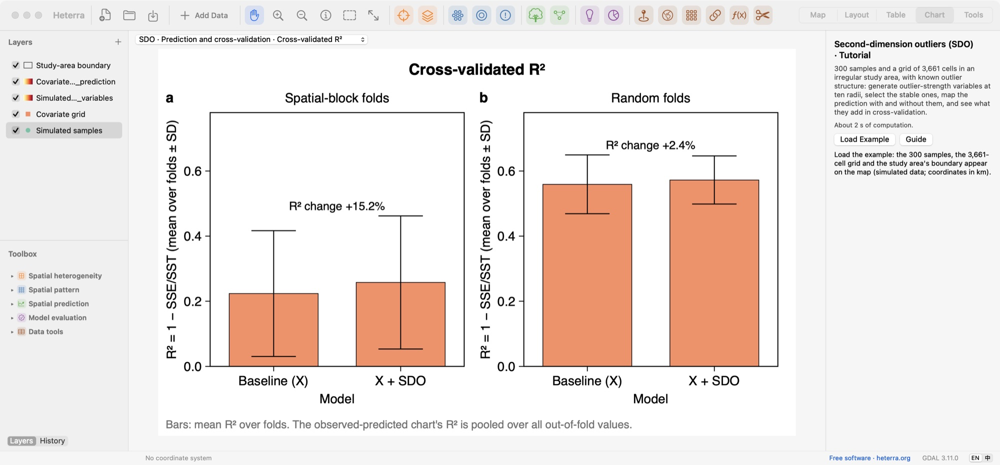

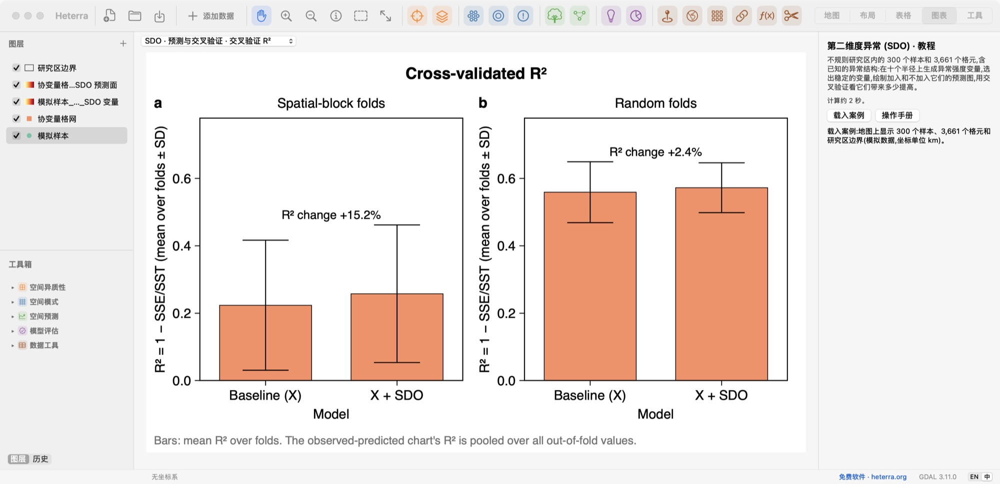
Spatial pattern空间模式
SDO Cross-validated R² with and without the SDO variables.使用与不使用 SDO 变量的交叉验证 R²。
Spatial prediction空间预测
GCF Selected variables, R², the prediction map and observed against predicted, in one figure.入选变量、R²、预测图,以及观测值与预测值的对比,都在一张图中。

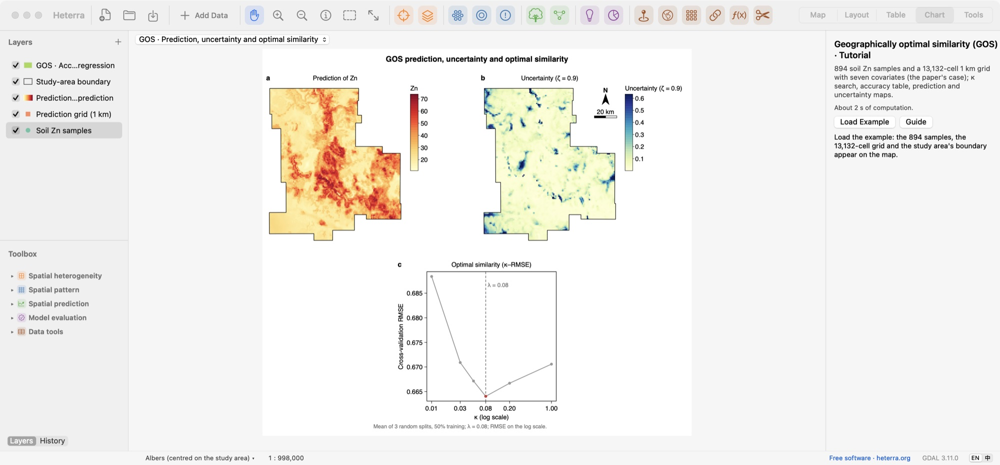

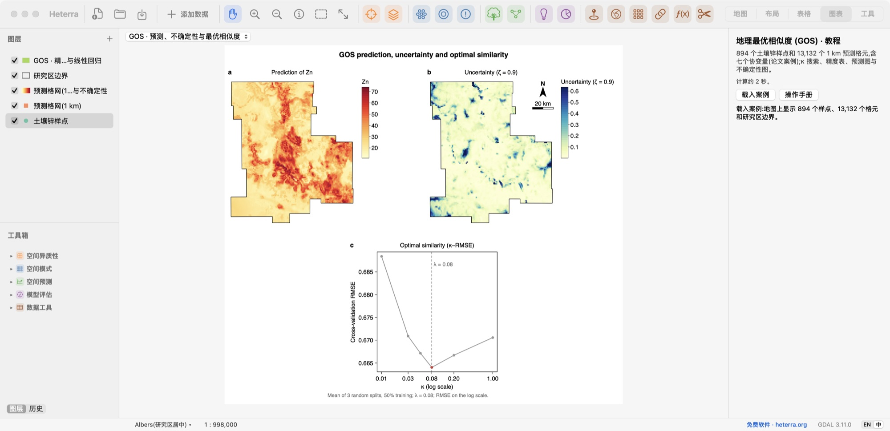
Spatial prediction空间预测
GOS Prediction, its uncertainty and the search for the optimal similarity.预测、预测不确定性,以及最优相似度的搜索曲线。

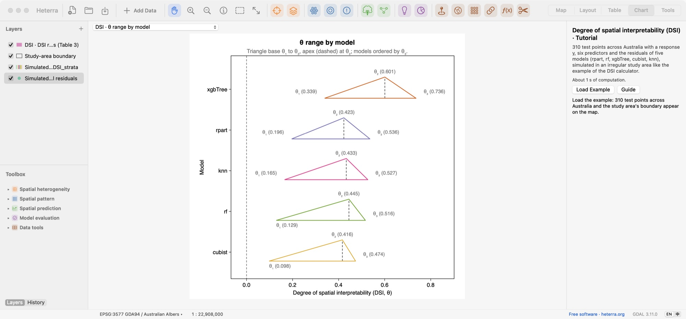

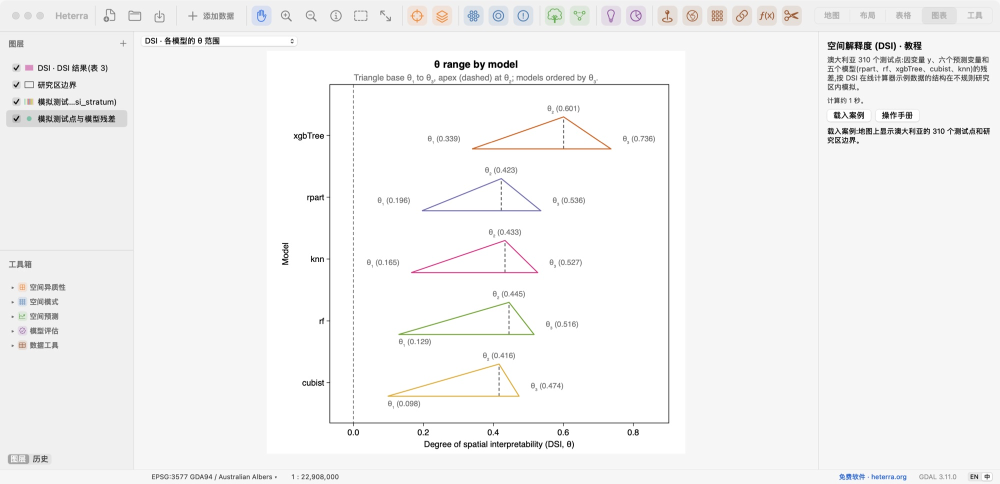
Model evaluation模型评估
DSI The range of θ for five models, ordered by θ₃.五个模型的 θ 范围,按 θ₃ 排序。

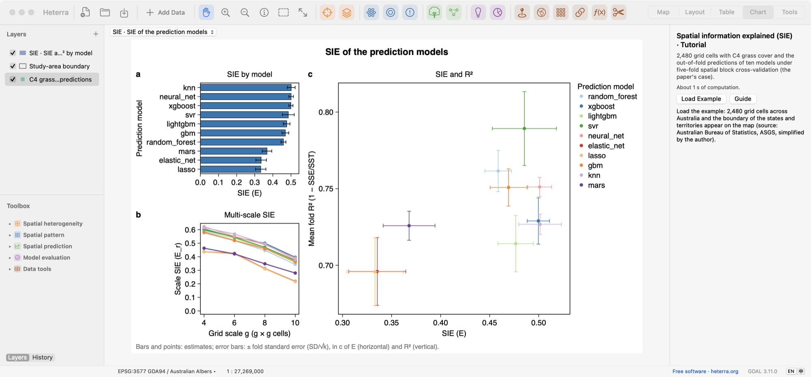

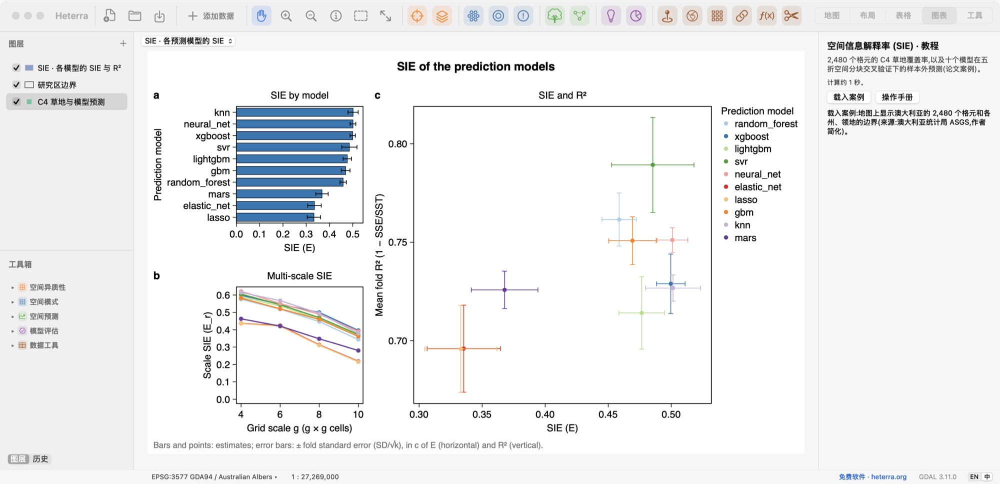
Model evaluation模型评估
SIE SIE by model, multi-scale SIE, and SIE against R² for ten models, with fold standard errors.十个模型的 SIE、多尺度 SIE,以及 SIE 与 R²,误差线为折间标准误。

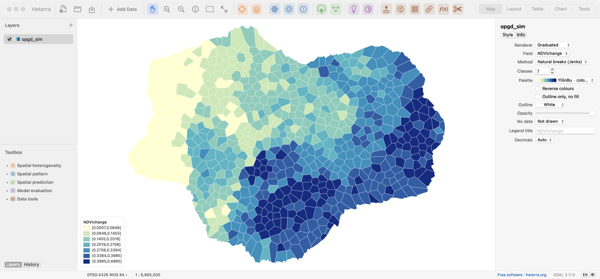

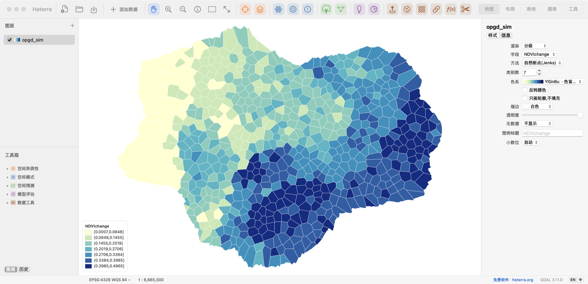
Map地图
Style any layer, here in seven natural-break classes.为任意图层设置符号,这里按自然断点分为七级。
Methods方法
Spatial heterogeneity空间异质性
Spatial pattern空间模式
Spatial prediction空间预测
Model evaluation模型评估
Data tools数据工具
CSV to points · Reproject · Raster to grid table · Join · Field calculator · Clip
CSV 转点 · 重投影 · 栅格转格网表 · 连接 · 字段计算 · 裁剪
Download下载
Version 1.5.0 · 25 MB · Heterra-1.5.0-arm64.dmg
版本 1.5.0 · 25 MB · Heterra-1.5.0-arm64.dmg
- Requirements. A Mac with Apple silicon and macOS 13 or later.
- 系统要求。Apple 芯片的 Mac,macOS 13 或更高。
- Install. Open the .dmg and drag Heterra to Applications.
- 安装。打开 .dmg,把 Heterra 拖到"应用程序"。
- First launch. macOS blocks Heterra the first time. Open System Settings → Privacy & Security and choose Open Anyway.
- 第一次打开。macOS 第一次会拦截 Heterra。请打开"系统设置 → 隐私与安全性",选择"仍要打开"。
Version 1.5.0 · 41 MB · Heterra-1.5.0-x64-setup.exe
版本 1.5.0 · 41 MB · Heterra-1.5.0-x64-setup.exe
- Requirements. Windows 10 (version 1809 or later) or Windows 11, 64-bit, with a processor from 2013 (Intel) or 2015 (AMD) or later. The installer checks the processor.
- 系统要求。Windows 10(1809 或更新版本)或 Windows 11,64 位;处理器为 Intel 2013 年或 AMD 2015 年以后的型号。安装程序会检查处理器。
- Install. Double-click the file. No administrator is needed.
- 安装。双击下载的文件,不需要管理员权限。
- "Windows protected your PC". Click More info, then Run anyway.
- "Windows 已保护你的电脑"。点击"更多信息",再点击"仍要运行"。
Cite引用
When you use Heterra, please cite it as below, together with the paper of each method you use, linked above. Heterra shows the full reference in every tool's panel.
使用 Heterra 时,请按下面的格式引用软件,并引用你所用方法的论文(链接见上)。每个工具的面板里都有完整的文献信息。
Song, Y. (2026) Heterra: Advanced spatial analysis [software]. https://heterra.org
Feedback反馈
If you have any suggestions, comments or questions, please email yongzesong.heterra@gmail.com.
如有任何建议、意见或问题,请发邮件到 yongzesong.heterra@gmail.com。
Subscribe to updates
Want to hear about new versions and important fixes? Copy this, fill it in and send it to yongzesong.heterra@gmail.com, with the first line as the subject.
Subject: Subscribe to Heterra software update notifications Name: Position (e.g. professor, researcher, student): Institution: Country/Region: Main use (optional):
Your email address is used only to send Heterra updates. To unsubscribe, reply to any of them.
订阅更新
想收到新版本和重要修复的通知?复制下面的内容,填好后发到 yongzesong.heterra@gmail.com,第一行作为邮件主题。
主题:订阅 Heterra 软件更新通知 姓名: 职位(如教授、研究人员、学生): 单位: 国家/地区: 主要用途(可选):
邮箱只用于发送 Heterra 的更新通知。想退订,回复任意一封通知即可。
Version history版本历史
- 1.5.0 Eight languages: English, Simplified Chinese (简体中文), Traditional Chinese (繁體中文), French (Français), Spanish (Español), Brazilian Portuguese (Português), Japanese (日本語) and Korean (한국어). New maps and tables in the results of SDO, DSI, GCF and LISP. 支持八种语言:英文(English)、简体中文、繁体中文(繁體中文)、法文(Français)、西班牙文(Español)、巴西葡萄牙文(Português)、日文(日本語)、韩文(한국어)。SDO、DSI、GCF、LISP 的结果新增地图和表格。
- 1.4.0 Windows version. Improved settings and tutorials. 新增 Windows 版。改进了设置和教程。
- 1.3.0 First public version. For Macs with Apple silicon. 第一个公开版本。适用于 Apple 芯片的 Mac。
Users用户
from countries and regions
来自 个国家和地区
Updated 更新于
Cumulative users by day每日累计用户数